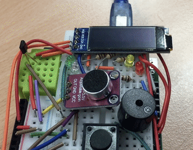

chapter 1: introduction to the Arduino
This first chapter introduces the Arduino -- a tiny computer that is often used to control all kinds of hardware, including robots, drones and art-installations.
After the video below, we're going to ask you two things:
- Tell us what words, terms, phrases in the video you did not fully understand.
- Write a quick summary of the video, to show which parts you did understand.
So, before you start watching the video, make sure you have a texteditor or a physical notepad ready to use. Make notes for your summary, and write down all the words you did not understand.
1.1: create a short summary
Make a list with 3 to 5 bullitpoints, in which you describe the most important parts on the Arduino which were explained in the video.
1.2: things we could explain
Refer to the notes you took when watching the video. Which words would you like us to explain during class?
1.3: what's that gizmo do?
Here's a list of components on the Arduino board. Use these components as answers to the series of questions below:- USB port
- Analog pins
- Digital pins
- The big chip
- The small push button
- The big black round connector
- To which component should you connect sensors for things like temperature, sound, or light intensity?
- To which component would you connect a simple button?
- Which components can be used to supply the Arduino with power?
- Which components can be used to restart the Arduino?
why learn Arduino?
The Arduino is one of the most underpowered computers you can buy today. Its processor is slow, and it has very little memory (2Kb!). And yet, it is quite popular with both nerds and artists. This is because of three reasons:
- It is cheap. At the time of writing, an 'official' Arduino costs a little over 20 euros. Chinese clones can be found for about 5 dollars, and such clones are not flakey fakes: the hardware design of the Arduino is public, and free for everyone to use, and so are the software tools to program Arduino and its clones.
- It is easy to connect all kinds of electronics to an Arduino. With many similar little computers (and big ones), you have to solder wires to the circuit board, or use complex programming tools to get anything working. Usually both. With Arduino neither: just plug in some wires.
- It is relatively easy to write programs that make the electronics do fun or important stuff. You don't need to study programming for months or years to get going. The amount of things you need to learn to master the Arduino is a lot less than most programming systems.
For this course, there is another reason why Arduino is very interesting. While there are thousands of programming languages, almost all of the mainstream languages fit on a spectrum that has JavaScript on one end, and Arduino's programming language (C++) on the other end. If you want, or need, to learn a different language, say PHP, Swift, Java, or Python, you will find that many (if not all) aspects of this new language are either similar to JavaScript, or similar to Arduino C++ (or a bit of both). And by seeing the many similarities between Arduino and JavaScript, you are learning the properties that are fundamental fundamental to most other languages.
By teaching you both JavaScript and Arduino, we are preparing you for programming in almost all other useful programming languages. No introductory course that uses just one language can do that just as effectively. And this course could not do this in a fun way without the Arduino.
How much fun is the Arduino? That is, basically, up to you. But do have a look at these two video's, that show some Arduino projects, and give you a sense of what Arduino enthusiasts like to use it for:
This video is specifically about Arduino in design and art projects:
This video is for creative tinkerers who don't consider themselves artists:
programming the Arduino
The following three video's explain the basics of programming the arduino. Watch them and make the assignments in the order they appear.
1.4: your first Arduino program
A poet has created a witty poem.
Write an Arduino program that prints the following poem to the Serial Monitor:
The limerick packs laughs anatomicalInto space that is quite economical.
But the good ones I’ve seen
So seldom are clean
And the clean ones so seldom are comical.
(It is also OK to use a different multi-line poem or joke)
Use five print commands, and make sure that the poem is only printed once.
In the this exercise, and many, many exercises after this one, you have to send in the code you created.
Please follow these two instructions:
- Copy-paste the program into the mail — don't add it to the mail as an attachment or a link to some site.
- Send in the entire code — not just the part where you've made your changes.
- Send in an unmodified copy of the program. — Some programs, such as MS Word or (sometimes) Outlook, try to make text look better by replacing straight qoutes (i.e. ' and ") by curled quoute characters (i.e. ‘’ and “”). Prevent this from happening, because programming tools really don't like curly quotes.
1.5: extending your Arduino program
The audience finds the poem hilarious, and starts laughing out loud.
1.5.a: Use the program you just made, and extend it with the following behaviour:
- After the poem has been printed, the program will start printing "ha ha" repeatedly.
- Between each "ha ha", there is a small delay of 200 milliseconds.
- After hearing the poem/joke, the audience needs some time to think about it. Have the program pause between the poem and the laughter for 1.5 seconds.
TIP:Test your program after writing the code for each bullit in the list.
1.5.b: Experiment
There is a second command in Arduino to print text to the USB-port:
Notice that this variant is called "Serial.print" instead of "Serial.println"
Change your program to use this Serial.print variant in a few places, and observe the change in behaviour.
- What is the difference in behaviour between Serial.println and Serial.print?
- The "ln" in "Serial.println" is an abbreviation. What do you think it stands for? Give your best guess.
1.5.c: ha ha ha ha ha ha ha
Make the program print all "ha"s on the same line.
Instead of a delay of 200ms after each "ha ha", use a 100ms delay after every single "ha".
calculating with operators
For calculations, programming languages use symbols that are available on keyboards, and some are different from what you've learned at school:
22 + 33
| adding |
22 - 33
| substracting |
22 * 33
| multiplying is done with a *, because × does not exist on keyboards, and the letter x would confuse the compiler. |
22 / 33
| dividing is done with a /, because ÷ does not exist on keyboards, and 2D formulas like can't be used in text files. |
|
There are many more operators like this in programming languages, such as: ^, ||, >, <=, !, ||, &, ==, etc. | |
You'll learn all the important ones in the coming weeks.
grammar rules for programming: syntax
Syntax is the word we use for the set of rules about how you write things in a programmming language. Every language has it's own syntax, but many aspects of syntax are shared among most languages. Here a a few basic rules found in many languages:
- names for commands (and other things) must start with a letter, and cannot contain spaces or symbols (like + or % or ;).
- operators for calculations (see box above) cannot contain letters or numbers. They are made with one or more symbols.
- strings denote pieces of text that a program uses as text. They are written inside quotation marks, like "hello world" in the command `Serial.println("hello world").
- comments denote pieces of text that a program will not use. Use them to add explanations to the code in your own language, or to disable certain lines of the program. Most often, comments start with // .
- braces and paenthesis denote pieces of text that a program will not use. Use them to add explanations to the code in your own language, or to disable certain lines of the program. Most often, comments start with // .
Space characters are only used to keep items in your program apart. That is why you can't have names or numbers with a space in them: the compiler will think you have two names, and get confused. Often they are optional. In the line Serial.println("game over");, no spaces are needed to keep the names, the symbols and the string apart. They are, however allowed: Serial . println ( "game over" ) ; is exactly the same.
Wherever a space is allowed (or required), you're free to add multiple spaces. You can also use line-end characters (a.k.a. newlines) in such places, or tab characters. So the following lines still mean the exacte same thing as the example in the previous paragraph:
But please, write code like this :-). It doesn't confuse the compiler, but it will confuse your teachers, your teammates, and even you yourself (after a few days).
1.6: exceptions to rules
In programming, like life, rules tend to have exceptions.
- The rule about spaces, dicussed above, has an exception. There actually is a situation where it matters if you have one, or two, or more spaces.
Can you write a variant of theSerial.println("game over");command where an extra space changes the result of the command? - Also, the rule that says that newlines can be added where spaces are allowed, has an exception.
Look at the multi-line example above. Can you point to a place in the code where replacing a space with a newline would make the program incorrect?
TIP:Test your solution with the Arduino IDE by trying to cause red error messages to appear (when clicking the Upload button) just because you added a newline.
the S4D breadboard
Although the prototype in the video did have one, the breadboards we use during the course do not have a light sensor. It turns out we did not need them, and the ones we ordered we of low quality. Sorry about that.
one more thing: installing U8g2
Oops! The previous video forgot to mention something important. To be able to program the little display on the breadboard, you need to install a 'library' in the Arduino IDE. This is a plugin, called U8g2, that is needed to get the Arduino to work with the OLED display. The short video below show how to install the library. Watch it and do it.
You have to install U8g2, before continuing with the rest of this chapter. After installing U8g2, you can forget about it. You won't meet it again, and it isn't important for learning to program.
testing the S4D breadboard
Before you can start with the exercises using the Arduino breadboard, you need check that every part of the breadboard is connected correctly.
The breadboard tester can be downloaded from its home page here.
You can also use this button:
1.7: test your breadboard
Test your breadboard with the test program.
If any component is not functioning correctly, feel if it has come a bit loose. If so, press it a bit more tightly into the breadboard, and see if that helps. Do not use a lot of force!
No need to mail the results from the test.
1.8: first blink
Let's create a variant of the blink program that works on your Arduino that uses all four lights.
The 4 LEDs are connected to pins 5, 9, 10, and 11.
1.8.a: Write a program that turns every LED on...
...one after the other, with a delay between each step. After all 4 LEDs have been turned on, they are all turned off at once:

Do not forget to use pinMode() commands in the setup!
1.8.b: Which color belongs to which pinnumber?
- The yellow LED has pin number:
- The green LED has pin number:
- The red LED has pin number:
- The blue LED has pin number:
1.8.c: Using the potentiometer.
Write a program that turns every LED on and off, one after the other.
The time that a light is turned-on depends on the potentiometer, the knob you can turn.

The portentiometer is connected to analog pin number 2
1.9: one command, so much to do
Serial.println( 100 + analogRead(1 + 1) * 4 );
// ------1------- -2- -----3---- -4- -5-
Below the line of code, we've given numbers to five actions the Arduino has to perform to run the entire command. Describe the order in which parts of the command are executed by the arduino.
the breadboard header file
Some components on the breadboard, like the OLED screen and the volume sensor, require some extra code to create the commands to program them conveniently. This code, along with some other helpful stuff is provided in a header file called 's4d_breadboard.h'. This file is a helper file that you will use in all of the Arduino exercises in this course.1.10: using the header file
- Take the blinking program you wrote for exercise 1.8.
- Add the breadboard header file.
- Change your program to use the header file:
- add the correct
#includeline; - add the command to initialize the breadboard in the correct spot in your code;
- remove the initialization commands that aren't needed anymore;
- replace the pin numbers with the names provided by the helper file.
- add the correct
1.11: calculations with magnets
For the Scientology church, we are building their new so called "E-meter" using our Arduino's magnet sensor.
- Make sure to include your s4d_breadboard.h file in your project.
- Run the program above. Ignore the blinking LED for now. Experiment with the magnetsensor. What happens to the value when the magnet is near the sensor? What happens when the magnet is far away?
- Modify the provided code so the light blinks faster or slower when the magnet is near.
- Can you think of a trick (calculation) that would amplify the effect? I.e. can you increase the speedup or slowdown when the magnet gets close? (It is OK if the blink time with no magnet gets larger).
Try to implement your trick. If that fails, just describe your idea in comments in the program.